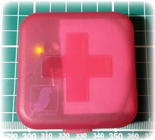
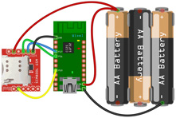
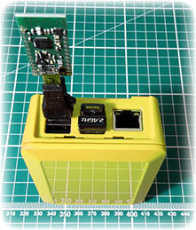
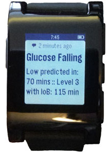
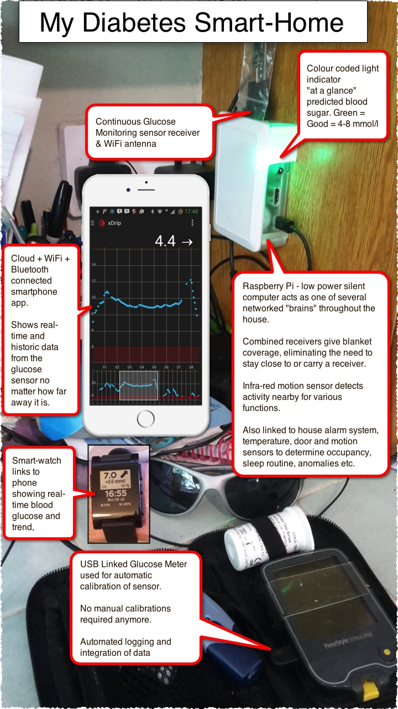

My Diabetes Smart Home
Index page for my research projects. Last updated January 2017
- Attempting to ease the burden of diabetes management through automation technology.
- Providing proof of concept tools to further research goals and inspire the next generation of systems.
The Parakeet
 The Parakeet is a portable home-built device which receives wireless signals from a commercial continuous G4 glucose sensor worn on the body. It transmits these over the phone network to a private or cloud internet server.
The Parakeet is primarily designed to allow parents and carers to be able to monitor the blood sugar of a diabetic child even if they are a long distance away, for example, carried in the pocket of a school bag. The real-time blood sugar information would be available on the parent’s mobile phone — potentially many miles away.

- Download Parakeet software (ZIP)
- Parakeet & Google App Engine Guide (PDF)
- Parakeet Github Project Page
- Purchase Parakeet kits from xdripkit.co.uk
Nightscout xDrip+
Personal research version of xDrip
- Voice, Keypad or Watch input of Treatments (Insulin/Carbs/Notes)
- Visualization of Insulin and Carb action curves + Undo/Redo
- Improved alerts and predictive low forecasting feature
- Instant data synchronization between phones and tablets
- Synchronize or follow with Nightscout NSclient


Whole house receiver coverage
 Using multiple Raspberry Pi silent mini-computers combined with Wixel receivers we can achieve blanket coverage of the whole house. It is no longer necessary to carry a CGM receiver or remain in range of one when at home. The signals can be collated and interpreted by these networked machines.
USB Wixels can use the Parakeet codebase, simply set use_gsm = 0 when compiling.
Automation Systems

Sophisticated forward prediction and anomaly detection systems, linked with internet connectivity, make it possible to provide alerts and computer based analysis intelligently. This can minimize “alarm fatigue” and reduce the mental burden of constantly tracking blood sugars.
Just about anything is possible once we have open interoperation of the glucose sensor data.
Currently there is active testing of systems which produce alerts based on sensor heuristics and probability tuned predictions of what is likely to be occurring at a given moment. Machine learning systems which can interpolate a lifetime of blood glucose data, detect anomalies and escalate alerts as needed.
These may range from a simple ambient lighting change indicating a blood sugar prediction right up to an emergency call out to friends and family if the diabetic becomes unresponsive.

Contact Information
To avoid spam I didn't post my email address here. If you need to email me, my address is shown on the last page of the Parakeet PDF document linked further up the page.